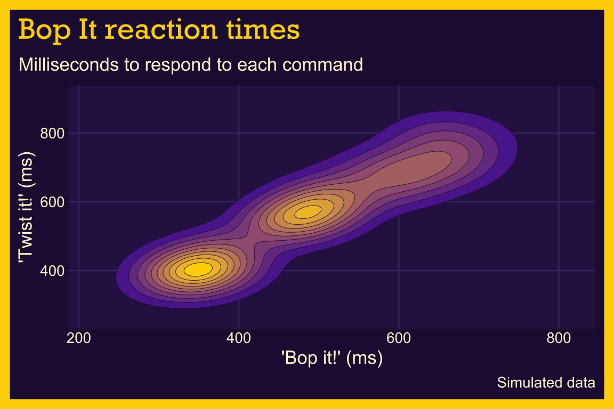
40 Density contours
40.1 Description
Density contours (or 2-D density plots) are helpful for displaying differences in values between two numeric (continuous) variables.
In topographical maps, contour lines are drawn around areas of equal elevation above sea-level. In density contours, the contour lines are drawn around the areas our data occupy (essentially replacing sea-level as ‘an area without any x or y values.’)
Specifically, the contour lines outline areas on the graph with differing point densities, and semi-transparent colors (gradient) can be added to further highlight the separate regions.
40.2 Set up
PACKAGES:
Install packages.
show/hide
install.packages("faux")
library(faux)
library(ggplot2)
library(dplyr) # for data manipulationDATA:
Bop It (1996) shouted commands at you (“Bop it!”, “Twist it!”, “Pull it!”) and sped up until you missed one. We’ll simulate the reaction times (in milliseconds) of 450 players to the “Bop it!” (bop_ms) and “Twist it!” (twist_ms) commands. A player who’s quick on one command tends to be quick on the other, so we’ll draw the two times in pairs with faux::rnorm_multi(). The make_group() function does this for one age group at a time, with its own means (mu), standard deviations (sd), and correlation (r). Teens are the fastest, parents are the slowest, and kids land in between. Setting the seed with set.seed() means you’ll get the same 450 players every time you run the code below.
show/hide
make_group <- function(group, n, mu, sd, r) {
faux::rnorm_multi(n = n, mu = c(bop_ms = mu[1], twist_ms = mu[2]),
sd = sd, r = r) |>
mutate(age_group = group)
}
set.seed(1996)
bopit_players <- bind_rows(
make_group("Teens", 150, mu = c(350, 400), sd = c(30, 35), r = 0.6),
make_group("Kids", 150, mu = c(480, 560), sd = c(40, 45), r = 0.7),
make_group("Parents", 150, mu = c(630, 720), sd = c(50, 60), r = 0.5)) |>
mutate(player_id = row_number(),
age_group = factor(age_group, levels = c("Teens", "Kids", "Parents")),
across(c(bop_ms, twist_ms), round)) |>
select(player_id, age_group, bop_ms, twist_ms)
glimpse(bopit_players)
#> Rows: 450
#> Columns: 4
#> $ player_id <int> 1, 2, 3, 4, 5, 6, 7, 8, 9, 10,…
#> $ age_group <fct> Teens, Teens, Teens, Teens, Te…
#> $ bop_ms <dbl> 347, 304, 351, 423, 317, 344, …
#> $ twist_ms <dbl> 431, 362, 404, 415, 346, 369, …40.3 Distribution
A density contour is a map of where the points are crowded. Each contour line connects spots with the same density, like the lines on a hiking map connect spots at the same elevation. The Bop It data has three hills (one for each age group), and each hill has the shape of a bivariate normal distribution. Below we’ll move from the players, to a picture, to the formula.
COUNT IT:
Start with the first two players in each age group.
show/hide
bopit_players |>
group_by(age_group) |>
slice_head(n = 2)Below we calculate the center, spread, and correlation for each age group.
show/hide
bopit_stats <- bopit_players |>
group_by(age_group) |>
summarise(mean_bop = mean(bop_ms), mean_twist = mean(twist_ms),
sd_bop = sd(bop_ms), sd_twist = sd(twist_ms),
r = cor(bop_ms, twist_ms))
bopit_statsThe teens average about 350 milliseconds to bop and the parents average about 628. The groups are far enough apart that they form separate crowds, but close enough that their edges overlap.
DRAW IT:
The graph below shows only the teens, with their points and their density contours. The contour lines are ellipses stacked inside each other, tilted because the two reaction times are correlated. The innermost ellipse surrounds the most crowded spot, right around the teens’ means.
show/hide
teens <- bopit_players |>
filter(age_group == "Teens")
ggplot(teens, aes(x = bop_ms, y = twist_ms)) +
geom_point(alpha = 1 / 2, color = "#1E90FF") +
geom_density_2d(color = "#FFD400") +
geom_point(data = filter(bopit_stats, age_group == "Teens"),
aes(x = mean_bop, y = mean_twist),
shape = 4, size = 5, stroke = 2, color = "#FF8C00") +
labs(x = "'Bop it!' (ms)", y = "'Twist it!' (ms)")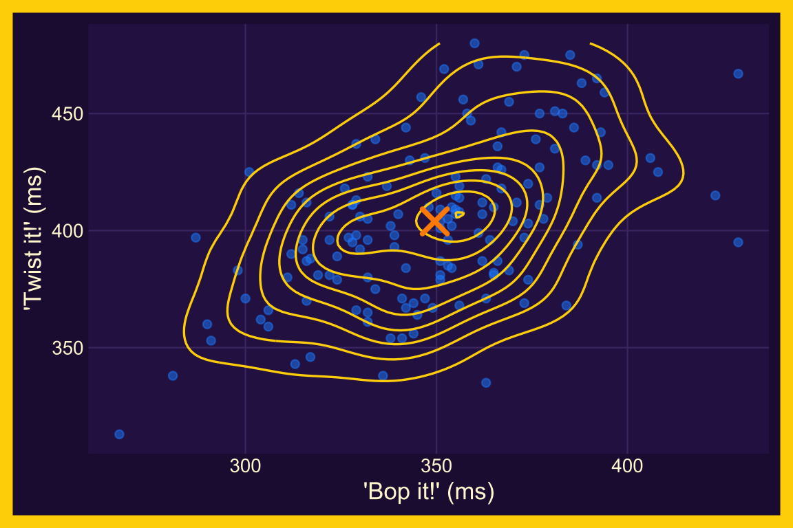
NAME IT:
Each age group’s reaction times come from a bivariate normal distribution. Its density (the height of the hill) at any point depends on how far that point is from the center, measured in standard deviations and adjusted for the correlation:
\[ f(x, y) = \frac{1}{2\pi \sigma_x \sigma_y \sqrt{1 - r^2}} \exp\left(-\frac{1}{2(1 - r^2)}\left[\frac{(x - \mu_x)^2}{\sigma_x^2} - \frac{2r(x - \mu_x)(y - \mu_y)}{\sigma_x \sigma_y} + \frac{(y - \mu_y)^2}{\sigma_y^2}\right]\right) \]
Points where the part in square brackets takes the same value share the same density, and those points always form an ellipse. That’s why the contours in DRAW IT are ellipses. With all three groups together, the density is a mixture (one third of each group’s hill), which is why the graph at the top of the page has three peaks. The level values that ggplot2 reports are these heights estimated from the data, in units of “players per square millisecond” (tiny numbers, because a square millisecond is a very small area). Try changing the kids’ mu to c(380, 430) and two of the hills merge into one.
40.4 Grammar
CODE:
Create labels with
labs()Initialize the graph with
ggplot()and providedataCreate two values for extending the range of the
xandyaxis (x_min/x_maxandy_min/y_max)Map
bop_mstoxandtwist_mstoyAdd the
expand_limits()function, assigning our stored values toxandyAdd the
geom_density_2d()
show/hide
# labels
labs_dnsty_2d <- labs(
title = "Bop It reaction times",
subtitle = "Milliseconds to respond to each command",
caption = "Simulated data",
x = "'Bop it!' (ms)",
y = "'Twist it!' (ms)"
)
# x limits
x_min <- min(bopit_players$bop_ms) - 50
x_max <- max(bopit_players$bop_ms) + 50
# y limits
y_min <- min(bopit_players$twist_ms) - 50
y_max <- max(bopit_players$twist_ms) + 50
ggp2_dnsty_2d <- ggplot(
data = bopit_players,
mapping = aes(
x = bop_ms,
y = twist_ms
)
) +
# use our stored values
expand_limits(
x = c(x_min, x_max),
y = c(y_min, y_max)
) +
geom_density_2d()
# plot
ggp2_dnsty_2d +
labs_dnsty_2dGRAPH:
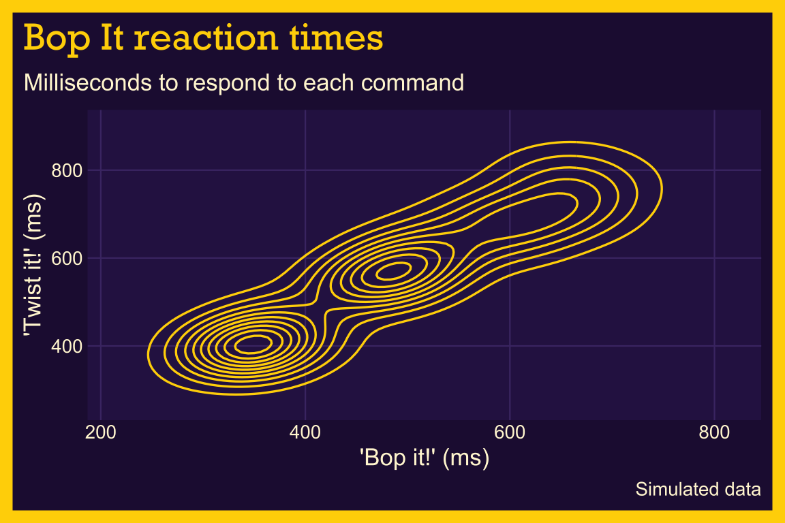
40.5 More info
We’re going to break down how to create the density contour layer-by-layer using the stat_density_2d() function (which allows us to access some of the inner-workings of geom_density_2d())
40.5.1 Base
Create a new set of labels
Initialize the graph with
ggplot()and providedataBuild a base layer:
Map
bop_mstoxandtwist_mstoyExpand the
xandyvalues withexpand_limits()(using the values we created above)
show/hide
labs_sdens_2d <- labs(
title = "Bop It reaction times",
caption = "Simulated data",
x = "'Bop it!' (ms)",
y = "'Twist it!' (ms)",
color = "Age group"
)
# base
base_sdens_2d <- ggplot(
data = bopit_players,
mapping = aes(
x = bop_ms,
y = twist_ms
)
) +
expand_limits(
x = c(x_min, x_max),
y = c(y_min, y_max)
)
base_sdens_2d +
labs_sdens_2d
#> Ignoring unknown labels:
#> • colour : "Age group"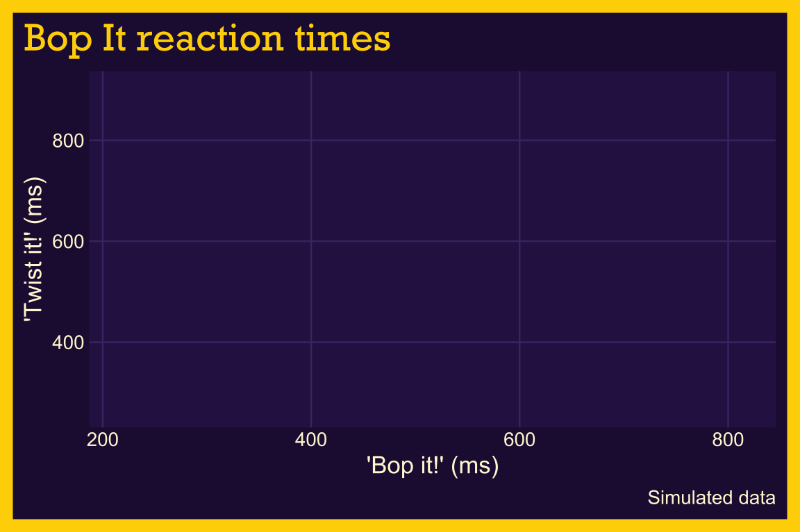
40.5.2 Stat
Add the stat_density_2d() layer:
Inside
aes(), useafter_stat()to mapleveltofill(from Help, “Evaluation after stat transformation will have access to the variables calculated by the stat, not the original mapped values.”)Set the
geomto"polygon"Change the
colorto the dark purple background (#23123F)adjust the
linewidthto0.35
show/hide
stat_sdens_2d <- base_sdens_2d +
stat_density_2d(
aes(fill = after_stat(level)),
geom = "polygon",
color = "#23123F",
linewidth = 0.35
)
stat_sdens_2d +
labs_sdens_2d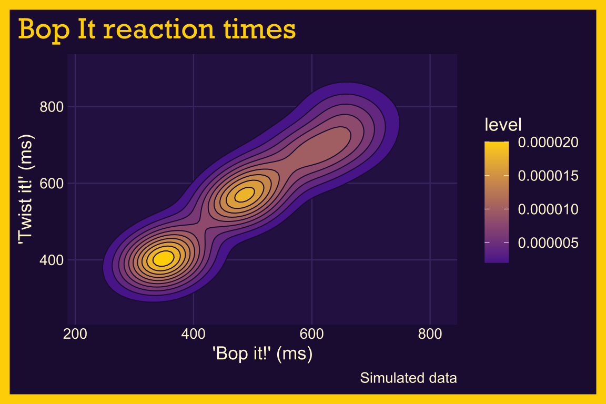
40.5.3 Fill
Where did levels come from?
You probably noticed the stat_density_2d() produced a legend with level, and a series of values for the color gradient. These are the heights of the density ‘hills’ we described in the NAME IT section above (in players per square millisecond).
Now that we have a color gradient for our contour lines, we can adjust the range of colors using scale_fill_gradient()
lowis the color for the low values oflevelhighis the color for the high values oflevelguidelet’s us control thelegend
We’ll set these to purple ("#5B2A9A") and Bop It yellow ("#FFD400")
show/hide
fill_sdens_2d <- stat_sdens_2d +
scale_fill_gradient(
low = "#5B2A9A",
high = "#FFD400",
guide = "legend"
)
fill_sdens_2d +
labs_sdens_2d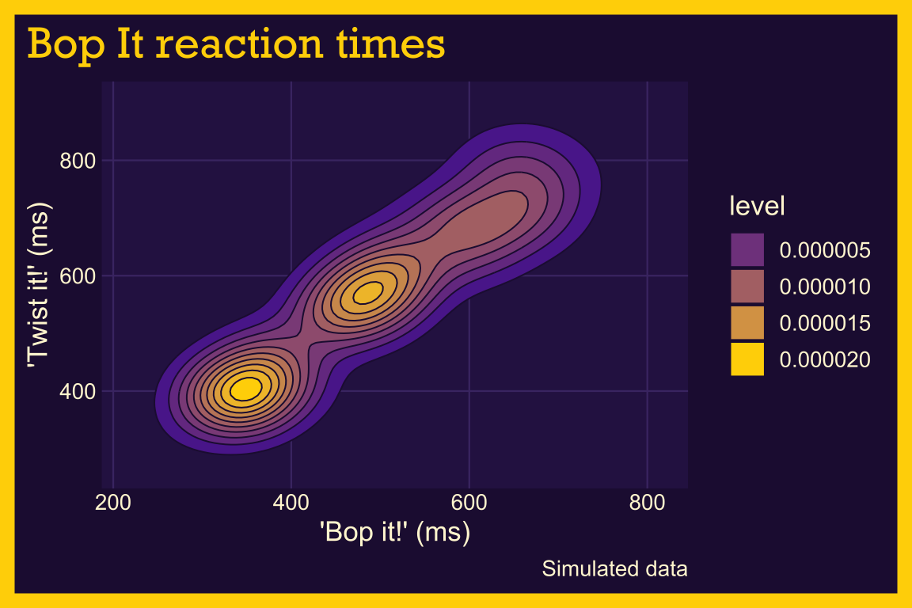
40.5.4 Points
The bright areas in the contour lines are the areas with higher value density, but why don’t we test that by adding some data points?
Add a
geom_point()layerInside
aes(), mapage_grouptocolor(this will tell us if the three bright areas represent the three age groups in the dataset)Set
sizeto2Change the
alphato2/3
show/hide
# geom_point()
pnts_sdens_2d <- fill_sdens_2d +
geom_point(aes(color = age_group),
size = 2,
alpha = 2 / 3
) +
scale_color_manual(values = c("#1E90FF", "#3CB043", "#FF5FA2"))
# final
pnts_sdens_2d +
labs_sdens_2d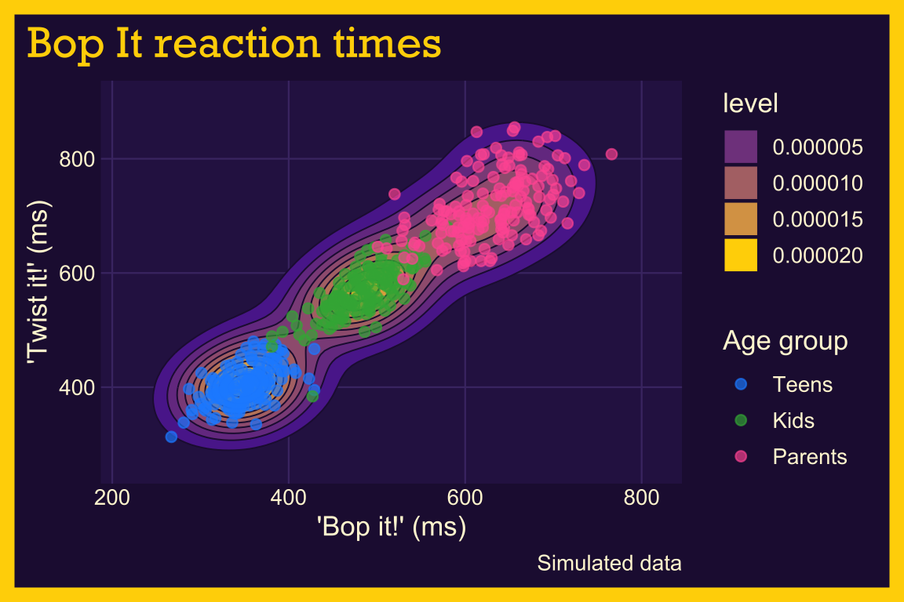
We set the point colors with scale_color_manual() so they stand out from the yellow and purple fill.
40.6 Even more info
In the previous plot, we used the age_group variable in the geom_point() layer to identify the points using color. In the section below, we’ll show more methods of displaying groups with density contour lines.
40.6.1 Groups
Re-create the labels
Initialize the graph with ggplot() and provide data
Build a geom_density_2d() layer:
Map
bop_mstoxandtwist_mstoyExpand the limits using our adjusted min/max
xandyvaluesAdd the
geom_density_2d(), mappingage_grouptocolor
Build the geom_point() layer:
Map
age_grouptocolorset the
alphaand remove thelegend
show/hide
labs_dnsty_2d_grp <- labs(
title = "Bop It reaction times",
caption = "Simulated data",
x = "'Bop it!' (ms)",
y = "'Twist it!' (ms)",
color = "Age group"
)
ggp2_dnsty_2d_grp <- ggplot(
data = bopit_players,
mapping = aes(
x = bop_ms,
y = twist_ms
)
) +
expand_limits(
x = c(x_min, x_max),
y = c(y_min, y_max)
) +
geom_density_2d(aes(color = age_group))
ggp2_dnsty_2d_pnts <- ggp2_dnsty_2d_grp +
geom_point(aes(color = age_group),
alpha = 2 / 3,
show.legend = FALSE
)
ggp2_dnsty_2d_pnts +
labs_dnsty_2d_grp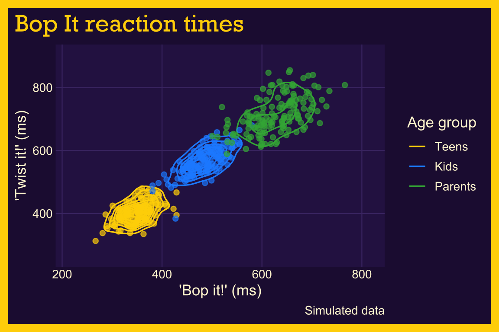
40.6.2 Facets
Re-create the labels
Initialize the graph with
ggplot()and providedataBuild the base/limits:
Map
bop_mstoxandtwist_mstoyExpand the limits using our adjusted min/max
xandyvalues
Build the
geom_density_2d_filled()layer:- Add the
geom_density_2d_filled(), settinglinewidthto0.30andcontour_varto"ndensity"
- Add the
Add the
scale_discrete_manual():Set
aestheticsto"fill"Provide a set of color
values(this plot needs 10 values, so we create them withcolorRampPalette(), which blends the dark purple panel color into Bop It yellow)
Facet:
- Add
facet_wrap(), and placeage_groupin thevars()
- Add
show/hide
labs_dnsty_2d_facet <- labs(
title = "Bop It reaction times",
subtitle = "By age group",
caption = "Simulated data",
x = "'Bop it!' (ms)",
y = "'Twist it!' (ms)"
)
ggp2_dnsty_2d_facet <- ggplot(
data = bopit_players,
mapping = aes(
x = bop_ms,
y = twist_ms
)
) +
expand_limits(
x = c(x_min, x_max),
y = c(y_min, y_max)
) +
geom_density_2d_filled(
linewidth = 0.30,
contour_var = "ndensity"
) +
scale_discrete_manual(
aesthetics = "fill",
values = colorRampPalette(c("#2E1A52", "#FFD400"))(10)
) +
facet_wrap(vars(age_group))
ggp2_dnsty_2d_facet +
labs_dnsty_2d_facet +
theme(
axis.text = element_text(size = 7),
legend.position = "bottom",
legend.text = element_text(size = 7),
legend.title = element_text(size = 8, face = "bold")
)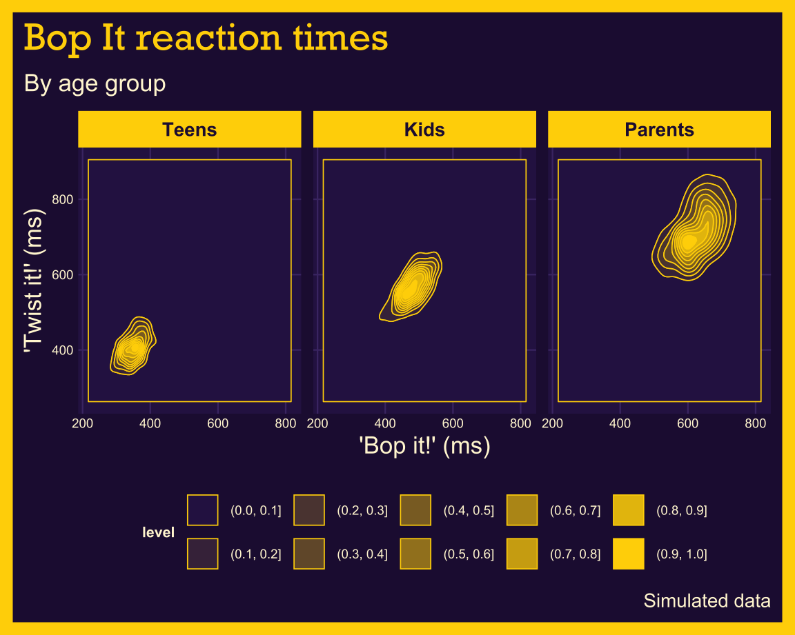
Setting contour_var to "ndensity" scales each panel’s density so its highest point is 1, which is why every age group gets the full range of colors.
40.6.3 Fill
In the previous section, we defined the color values used in geom_density_2d_filled() with scale_discrete_manual(). Below we give an example using the default colors:
Re-create the labels
Initialize the graph with
ggplot()and providedataBuild the base/limits:
Map
bop_mstoxandtwist_mstoyExpand the limits using our adjusted min/max
xandyvalues
Add the
geom_density_2d()layerAdd the
geom_density_2d_filled(), settingalphato0.8
show/hide
labs_dnsty_2d <- labs(
title = "Bop It reaction times",
caption = "Simulated data",
x = "'Bop it!' (ms)",
y = "'Twist it!' (ms)"
)
ggp2_dnsty_2d <- ggplot(
data = bopit_players,
mapping = aes(
x = bop_ms,
y = twist_ms
)
) +
# use our stored values
expand_limits(
x = c(x_min, x_max),
y = c(y_min, y_max)
) +
geom_density_2d()
ggp2_dnsty_2d_fill <- ggp2_dnsty_2d +
geom_density_2d_filled(alpha = 0.8)
ggp2_dnsty_2d_fill +
labs_dnsty_2d +
theme(
legend.text = element_text(size = 6),
legend.title = element_text(size = 9, face = "bold")
)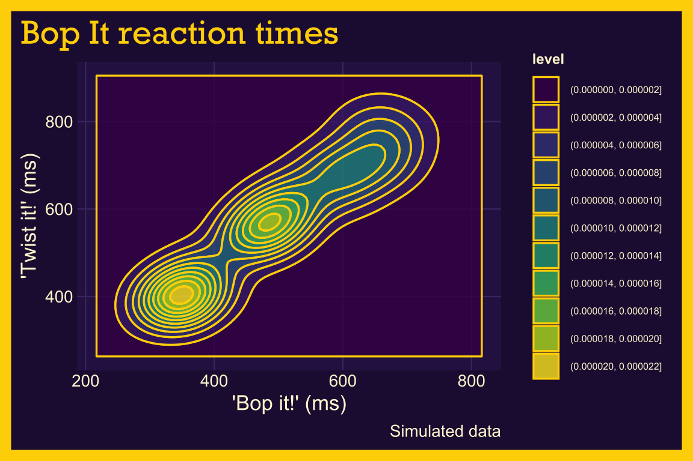
40.6.4 Lines
We can also outline the contours by adding color to the lines using another geom_density_2d() layer:
Set
linewidthto0.30Set
colorto"#FFF6D6"
show/hide
ggp2_dnsty_2d_fill_lns <- ggp2_dnsty_2d_fill +
geom_density_2d(
linewidth = 0.30,
color = "#FFF6D6"
)
ggp2_dnsty_2d_fill_lns +
labs_dnsty_2d +
theme(
legend.text = element_text(size = 6),
legend.title = element_text(size = 9, face = "bold")
)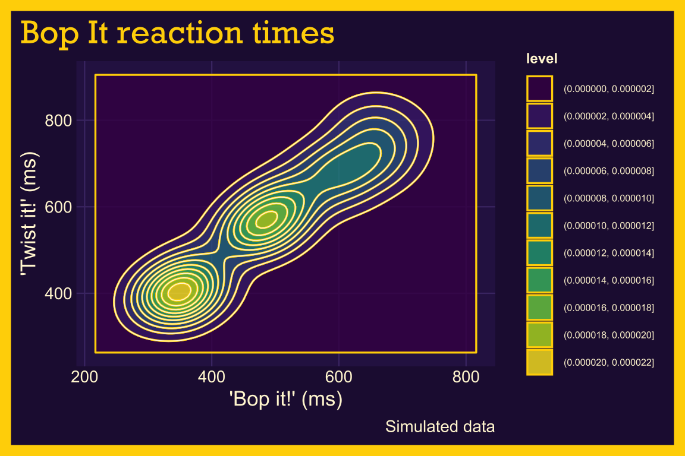